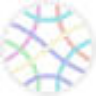
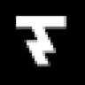
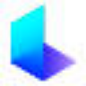

МолекулаАгрегаторы нейросетей
Молекула объединяет модели для текстов, изображений, видео и музыки. В одном аккаунте можно подобрать инструмент под этап работы, сохранить инструкции проекта и использовать готовые роли.
К задаче в МолекулеРаздел «Создание контента»: варианты ИИ для этой задачи, описания возможностей и переходы к обзорам. Сравните несколько решений на одинаковом примере.
Подготовьте полезный пост из одного настоящего вопроса аудитории, используя собственные факты. Передайте ответ и небольшой пример; получите ясную публикацию с подходящим следующим действием, затем проверьте, не появились ли в ней придуманные отзывы или неподтверждённые свойства продукта.
Напиши пост по вопросу клиента: как хранить керамическую чашку, чтобы не повредить ручку. Используй мои рекомендации, добавь маленький пример размещения, не выдумывай отзывы и свойства материала.

Молекула объединяет модели для текстов, изображений, видео и музыки. В одном аккаунте можно подобрать инструмент под этап работы, сохранить инструкции проекта и использовать готовые роли.
К задаче в Молекуле«Beacons AI» представлен в разделе «Маркетинг». При выборе проверьте нужную операцию и условия работы с результатом.
«Beemer» собирает материал для презентации.
«Bith AI [Ghost]» работает с материалами для социальных площадок. «Bith AI [Ghost]» также помогает править исходный видеоматериал.
Сравнивать «Dr. Lambda» с другими инструментами раздела «Создание контента» удобнее на одинаковом исходном материале.

Для «Emergent Drums» сначала определите свою задачу и требуемый результат. Карточка относится к направлению «Создание контента».
«FancyMe» работает с материалами для социальных площадок.
Сравнивать «FocuSee» с другими инструментами раздела «Видео» удобнее на одинаковом исходном материале.
Сравнивать «Infinity ai» с другими инструментами раздела «Видео» удобнее на одинаковом исходном материале.
«Linkedin Posts Generator» представлен в разделе «Создание контента». При выборе проверьте нужную операцию и условия работы с результатом.
«LittleStory.io» помогает составить сказочный сюжет.
«Movavi Video Editor» создаёт видеоматериал по заданию. «Movavi Video Editor» также помогает подготовить персонализированный видеоматериал.
Сравнивать «MyMap AI» с другими инструментами раздела «Чат-боты и ассистенты» удобнее на одинаковом исходном материале.
Playbook AI объединяет совместную творческую работу и хранение материалов. Продукт предназначен для дизайнерских команд и самостоятельных специалистов, которые создают визуальный контент. Среди возможностей есть изображения с участием ИИ, редактирование и организация файлов; отдельно представлены условия творческого лицензирования материалов.
Podium помогает авторам подкастов подготавливать материалы по выпуску с помощью ИИ. Инструмент создаёт расшифровки и главы, а также фрагменты и публикации для соцсетей. Генерация ключевых слов дополняет работу с содержанием, связывая исходную запись и сопроводительный контент для слушателей.
Для «Regie» сначала определите свою задачу и требуемый результат. Карточка относится к направлению «Продуктивность».
Сравнивать «Rodeo» с другими инструментами раздела «Маркетинг» удобнее на одинаковом исходном материале.
«Slick» помогает собирать и править видеоматериал. «Slick» также помогает править исходный видеоматериал.
Сравнивать «SongGenerator.io» с другими инструментами раздела «Создание контента» удобнее на одинаковом исходном материале.
«Soundful» подготавливает музыкальные варианты по заданию.

«Thundercontent» представлен в разделе «Тексты и контент». При выборе проверьте нужную операцию и условия работы с результатом.
Для «VEED» сначала определите свою задачу и требуемый результат. Карточка относится к направлению «Видео».
«Voxxio» помогает развивать текст истории.
«Wave.Video» создаёт видеоматериал по заданию. «Wave.Video» также помогает подготовить персонализированный видеоматериал.
«Waverly» представлен в разделе «Создание контента». При выборе проверьте нужную операцию и условия работы с результатом.
«Airuco.ru» помогает с задачами поискового продвижения. Дополнительно «Airuco.ru» работает с материалами для социальных площадок.
«Artificial Printer» работает с материалами для социальных площадок.
Для «Beehiiv» сначала определите свою задачу и требуемый результат. Карточка относится к направлению «Email».
«Buffer» работает с материалами для социальных площадок.
«Cutlabs AI» помогает собирать и править видеоматериал.
Для «Enprompt360» сначала определите свою задачу и требуемый результат. Карточка относится к направлению «Создание контента».
«Feedeo» создаёт видеоматериал по заданию.
Для «Flow Studio» сначала определите свою задачу и требуемый результат. Карточка относится к направлению «Видео».
«GenieAI» представлен в разделе «Создание контента». При выборе проверьте нужную операцию и условия работы с результатом.
Для «HeadlinesAI» сначала определите свою задачу и требуемый результат. Карточка относится к направлению «Создание контента».
«Hostinger» помогает собрать сайт или веб-приложение.
Сравнивать «Hotshot» с другими инструментами раздела «Видео» удобнее на одинаковом исходном материале.
«Lately AI» работает с материалами для социальных площадок.

«Luma AI» подготавливает трёхмерные объекты. «Luma AI» также помогает подготовить персонализированный видеоматериал.
Make a Video представляет собой систему генерации видео по текстовым запросам. Описание связывает её с технологиями создания изображений и последующего видеопреобразования. Основной сценарий состоит в передаче словесной идеи и получении визуальной сцены, не предполагая подтверждённого набора редакторских функций или определённого формата готового файла.
«Mealpractice» подготавливает идеи рецептов.
«Mobius» создаёт видеоматериал по заданию. Дополнительно «Mobius» помогает подготовить персонализированный видеоматериал.

Oxolo создаёт видеоматериалы с участием ИИ для задач электронной торговли. Продукт ориентирован на компании, которым нужны маркетинговые ролики для представления товаров. Основное назначение связано с подготовкой такого контента; само создание видео не подтверждает рост продаж или определённую реакцию аудитории после размещения.
«Peech AI» помогает подготовить персонализированный видеоматериал. «Peech AI» также помогает править исходный видеоматериал.
«Pencil» готовит формулировки рекламного материала.
«RadioNewsAI» представлен в разделе «Создание контента». При выборе проверьте нужную операцию и условия работы с результатом.
«reword.com» помогает организовать работу с базой знаний.
«SoraWeb» создаёт видеоматериал по заданию. «SoraWeb» помогает подготовить персонализированный видеоматериал.
Страница 1 из 8